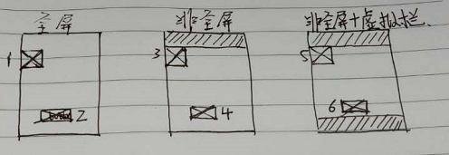

问题：设计给我的是1080的设计稿，如何快速的还原成页面？
答：
推荐方案：
width使用% 当屏幕宽度变化时，元素宽也会按比例变化
padding、margin可以使用% 相对于父元素的width
border可使用px chrome中测试，%不支持
font-size用rem 若使用px，当字体变大时，该文字不会变大
line-height可用数字或其他单位
height 可用px、rem、% %是相对于包含它的块级元素的高
问题：设计给我的是1080的设计稿，比如边框是3px，我是否应该让所有元素有弹性，还是拿边框做引子讲，在1080设备中显示为3，而在540设备中显示为1.5？
答：我当初觉得这么做很好，于是试着把我的css库的元件也改成这样，比如按钮，会随着窗口的变大变小，按钮也会变大变小，但有时我的需求不需要变大变小，我也研究了作者的网站，没有随着窗口变大变小。
实现原理:
100vw Xvw 1rem
-----------------
1080 100
100*100/1080
html{font-size:9.259259259259260vw;}
问题：在三种屏幕下如何显示？

答：1 离顶部有距离，3 与顶部没有间距
4 离底部的距离 大于 6 离底部距离
数值需要咨询设计师，实现可使用媒体查询